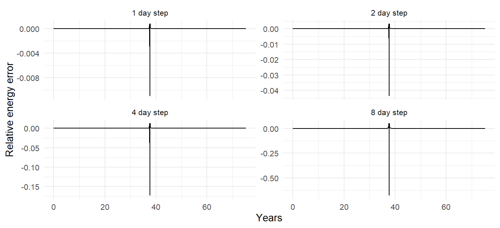
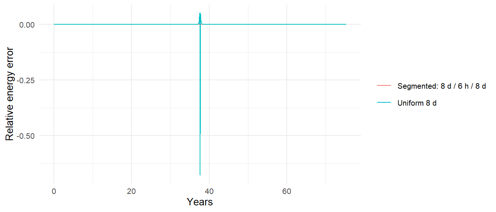

AU <- distance_earth_sun
mu_sun <- gravitational_constant * mass_sun
halley <- list(a = 17.834 * AU, e = 0.96714, i = 162.26,
lan = 58.42, arg_pe = 111.33)
halley_system <- create_system() |>
add_sun() |>
add_body_keplerian("Halley", mass = 2.2e14, parent = "Sun",
a = halley$a, e = halley$e, i = halley$i,
lan = halley$lan, arg_pe = halley$arg_pe, nu = 180)13 Comets and Highly Eccentric Orbits
Everything in the solar system chapter was nearly circular, and nearly circular orbits are easy: the speed hardly changes, so one time step is as good as another. A comet is the opposite case. Halley’s Comet spends seventy years crawling through the outer solar system and a few months sprinting around the Sun at sixty times the speed, and a step that is wasteful at aphelion is hopeless at perihelion. This chapter sets Halley up from its orbital elements, shows exactly how and where a fixed step fails on it, and then builds the tool the package does not have: a way to take small steps only when they are needed. It closes with two orbits that are not ellipses at all.
13.1 Halley
Halley’s Comet has semi-major axis 17.8 AU, eccentricity 0.967, and an inclination of 162°, which is to say it orbits the Sun backward, tilted 18° from the ecliptic. Its perihelion is 0.586 AU, inside Venus’s orbit; its aphelion is 35 AU, beyond Neptune’s. Chapter 7’s conversion handles all of that:
nu = 180 starts the comet at aphelion, where it is moving slowest. Vis-viva gives the speeds at both ends of the orbit and Kepler’s third law the period:
q <- halley$a * (1 - halley$e) # perihelion distance
Q <- halley$a * (1 + halley$e) # aphelion distance
c(v_perihelion_km_s = sqrt(mu_sun * (2 / q - 1 / halley$a)) / 1e3,
v_aphelion_km_s = sqrt(mu_sun * (2 / Q - 1 / halley$a)) / 1e3,
period_years = 2 * pi * sqrt(halley$a^3 / mu_sun) / seconds_per_year)
#> v_perihelion_km_s v_aphelion_km_s period_years
#> 54.577537 0.911688 75.305411Fifty-five kilometers per second at perihelion, under one at aphelion: the ratio \((1+e)/(1-e)\) from Chapter 7. The timescale that matters for the integrator is the perihelion distance divided by the perihelion speed,
tau_peri <- q / sqrt(mu_sun * (2 / q - 1 / halley$a))
tau_peri / seconds_per_day
#> [1] 18.59175about 19 days. By Chapter 5’s rule a step should be a small fraction of that, so a day is marginal and a week is wrong. Meanwhile the orbit takes 75 years, and a one-day step over 75 years is 27,000 steps for a passage that occupies a few hundred of them.
13.2 Where a fixed step fails
Run one full orbit at four step sizes and watch the energy:
T_halley <- 2 * pi * sqrt(halley$a^3 / mu_sun)
halley_runs <- bind_rows(lapply(c(1, 2, 4, 8), function(step_days) {
halley_system |>
simulate_system(time_step = seconds_per_day * step_days,
duration = T_halley) |>
conserved_quantities() |>
mutate(step_days = step_days)
}))halley_runs |>
ggplot(aes(time / seconds_per_year, energy_error)) +
geom_line() +
facet_wrap(~ step_days, scales = "free_y",
labeller = labeller(step_days = function(s) paste(s, "day step"))) +
labs(x = "Years", y = "Relative energy error")
The shape is instructive. For the first 37 years the error is essentially zero at every step size, because far from the Sun the acceleration changes slowly and even an 8-day step is tiny compared with the local timescale of years. Then, in the few weeks around perihelion, each run makes all of its error at once. For the 1-day step the kick is small and the comet comes out on nearly the right orbit. For the 8-day step the kick is a substantial fraction of the comet’s binding energy, which means the comet leaves perihelion on a different orbit, with a different period, and every subsequent apparition is at the wrong time.
The error is \(O(\Delta t^2)\) in the usual way, as the ratios between panels show, but that is cold comfort when the only way to shrink it is to spend 27,000 steps on an orbit that needs a thousand. Two of the three possible responses are bad.
Softening is not the answer. It would cap the force near the Sun, which is exactly the force that is correct. Halley does not hit the Sun. Softening would change the orbit to a wrong one at every perihelion, smoothly and forever.
A uniform small step works but wastes effort. A 6-hour step is safely inside the perihelion timescale and costs 110,000 steps per orbit. For one comet that is fine, a minute or two of computing. For a thousand comets, or a comet with a period of a thousand years, it is not.
13.3 Segmented runs
The right response is to take small steps near perihelion and large steps elsewhere. simulate_system() integrates with one fixed step, but nothing stops you from running it several times, because the last row of a simulation tibble is a complete state. continue_simulation() does the bookkeeping: it rebuilds the system from the final time step (system_from_simulation() does that part on its own, if you want to edit the system between segments), runs it onward with whatever step you give it, and appends the new rows with time continuing from where the old run ended. The gravitational constant, integrator, and softening carry over from the previous segment unless you say otherwise.
Each segment is an ordinary Verlet run with all of Chapter 5’s guarantees; only at the switches is there any disturbance, and it is a single step’s worth.
When to switch? Say we want the small step inside 5 AU. Kepler’s equation, run in reverse, gives the time from perihelion to any true anomaly, and the true anomaly at \(r = 5\) AU follows from the orbit equation, \(\cos\nu = (p/r - 1)/e\) (the inverse-direction helper time_since_periapsis() is in R/helpers.R):
p <- halley$a * (1 - halley$e^2)
nu_5AU <- acos((p / (5 * AU) - 1) / halley$e) * 180 / pi
t_inside <- time_since_periapsis(nu_5AU, halley$a, halley$e, mu_sun)
c(nu_at_5AU_deg = nu_5AU, years_inside_5AU_each_way = t_inside / seconds_per_year)
#> nu_at_5AU_deg years_inside_5AU_each_way
#> 142.71047 1.02473Halley spends about a year on each side of perihelion inside 5 AU, and 73 years outside. Three segments, then: coarse from aphelion to the 5 AU crossing, fine through perihelion, coarse back out:
coarse <- seconds_per_day * 8
fine <- seconds_per_hour * 6
t_out <- T_halley / 2 - t_inside # aphelion to the inbound crossing
segmented <- halley_system |>
simulate_system(time_step = coarse, duration = t_out) |>
continue_simulation(time_step = fine, duration = 2 * t_inside) |>
continue_simulation(time_step = coarse, duration = t_out)
n_distinct(segmented$time)
#> [1] 6339A few thousand steps instead of 110,000, and the energy:
bind_rows(
conserved_quantities(segmented) |> mutate(run = "Segmented: 8 d / 6 h / 8 d"),
halley_runs |> filter(step_days == 8) |> mutate(run = "Uniform 8 d")
) |>
ggplot(aes(time / seconds_per_year, energy_error, color = run)) +
geom_line() +
labs(x = "Years", y = "Relative energy error", color = NULL)
c(segmented = max(abs(conserved_quantities(segmented)$energy_error)),
uniform_8_day = max(abs(filter(halley_runs, step_days == 8)$energy_error)),
uniform_1_day = max(abs(filter(halley_runs, step_days == 1)$energy_error)))
#> segmented uniform_8_day uniform_1_day
#> 0.0003968142 0.6776209618 0.0109308137The segmented run beats the uniform daily run on accuracy at a fraction of its cost. The idea generalizes: for a comet with many perihelion passages, loop over them; for a system with one body that needs fine steps and many that do not, you still pay for the fine steps on every body (the package integrates them all together), which is the limitation that true adaptive-step codes remove. Chapter 16 says why they are hard to do without losing Verlet’s symplectic guarantee.
13.4 Hyperbolic visitors
In 2017 an object was found on an orbit with \(e = 1.2\). It was not bound to the Sun at all; it had come from interstellar space and was on its way back out. ’Oumuamua passed perihelion at 0.255 AU and was gone within months.
The same six elements describe a hyperbola, with one twist: its semi-major axis is negative. The periapsis distance \(a(1-e)\) stays positive, since both factors flip sign, and with \(a < 0\) and \(e > 1\) the semi-latus rectum \(p = a(1-e^2)\) is positive, \(h = \sqrt{\mu p}\) is real, and Equation 7.1 and Equation 7.2 work unchanged. add_body_keplerian() accepts \(e > 1\) when a is negative, provided the starting true anomaly is within the asymptotes, \(|\nu| < \arccos(-1/e)\) (it refuses \(e = 1\) exactly, where \(a\) would be infinite):
e_ou <- 1.1995
q_ou <- 0.2553 * AU
a_ou <- -q_ou / (e_ou - 1) # negative for a hyperbola
c(asymptote_deg = acos(-1 / e_ou) * 180 / pi,
deflection_deg = 2 * asin(1 / e_ou) * 180 / pi)
#> asymptote_deg deflection_deg
#> 146.4787 112.9574
oumuamua <- create_system() |>
add_sun() |>
add_body_keplerian("Oumuamua", mass = 1e10, parent = "Sun",
a = a_ou, e = e_ou, i = 122.7, lan = 24.6,
arg_pe = 241.8, nu = -140) |>
simulate_system(time_step = seconds_per_hour, duration = seconds_per_year * 2.4)rel <- relative_state(oumuamua, "Oumuamua", "Sun") |>
mutate(r = sqrt(rx^2 + ry^2 + rz^2), v = sqrt(ux^2 + uy^2 + uz^2),
energy = v^2 / 2 - mu / r)
c(r_start_AU = first(rel$r) / AU, r_end_AU = last(rel$r) / AU,
v_max_km_s = max(rel$v) / 1e3,
v_perihelion_predicted = sqrt(mu_sun * (1 + e_ou) / q_ou) / 1e3,
energy_min = min(rel$energy), energy_max = max(rel$energy))
#> r_start_AU r_end_AU v_max_km_s
#> 6.921416e+00 1.061724e+01 8.743576e+01
#> v_perihelion_predicted energy_min energy_max
#> 8.743615e+01 3.466985e+08 3.467151e+08The specific energy is positive and constant, the maximum speed is the vis-viva prediction at perihelion (\(v_p^2 = \mu(1+e)/q\), from \(a \to\) negative in Equation 4.11), and the eccentricity at the end is the eccentricity at the start:
range(get_orbital_elements(oumuamua, "Oumuamua", "Sun")$e)
#> [1] 1.199492 1.199501The object came in at 26 km/s relative to the Sun and left at 26 km/s, deflected through the angle \(2\arcsin(1/e)\) of about 113 degrees. (The real ’Oumuamua showed a small extra acceleration away from the Sun that gravity alone cannot produce, most likely outgassing, which is a non-gravitational force of the kind Chapter 16 discusses.)
13.5 Sungrazers
The Kreutz family of comets, hundreds of which have been seen by solar observatories, have perihelia around 0.005 AU, about one solar radius. Vis-viva at that distance gives
R_sun <- 6.957e8
sqrt(2 * mu_sun / R_sun) / 1e3
#> [1] 617.7664kilometers per second, over six hundred, which is the escape speed from the Sun’s surface, since these comets arrive on nearly parabolic orbits. Most of them do not survive. The simulation would carry them through without comment: the Sun is a point, the comet is a point, and two points can pass within a solar radius, or within a meter, and the integrator will either resolve it (with a step of minutes) or produce the spurious kick of Chapter 6. The package roadmap’s radius argument and collision handling are the fix; until then, a Kreutz comet is a case where the physics the package implements and the physics that happens part company, and the simulation’s answer should be read as “it would have hit.”